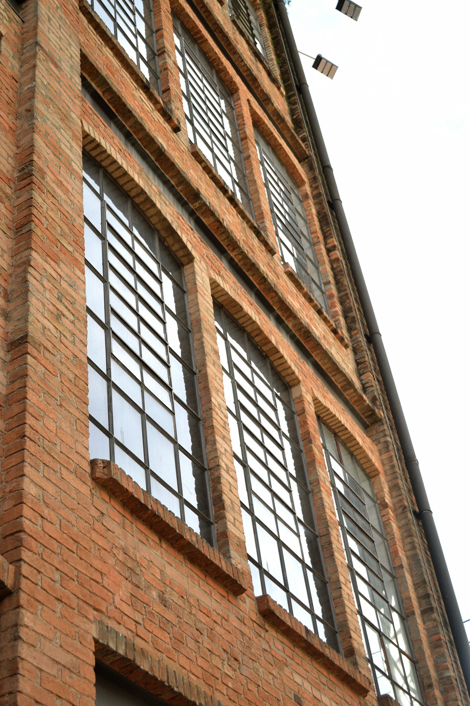

Padaria EstrelaRua da Mooca, 1.240
Horário das
fornadas
Pão francês saindo do forno, três vezes por dia.
- 6hantes do primeiro turno
- 11hpara o almoço
- 17hna volta da fábrica
Encomendas(11) 98765-4321

Padaria EstrelaRua da Mooca, 1.240
Pão francês saindo do forno, três vezes por dia.
Encomendas(11) 98765-4321
Fotos: “Cotonifício Crespi fachada”, Cassio Sabacão, CC BY 4.0; “Pão francês carioca”, Gabriel Del Cima, CC BY-SA 4.0; via Wikimedia Commons.